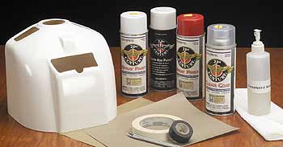
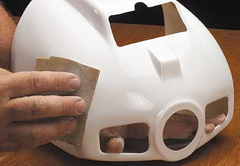
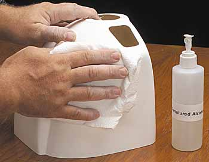
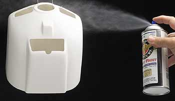
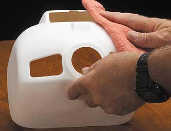
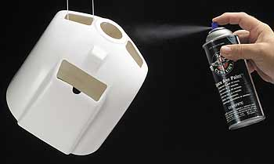

|
|
Покраска из баллончика -- это просто Простая техника для отличных результатов | ||||
| |||||

Основные предметы, которые вам понадобятся это 150- и 220- наждачная бумага, изолента, бумажная малярная лента,
острый хоббийный нож, бумажные полотенца и спирт-денатурат. Вам также понадобится маскирующая бумага (оберточная бумага или сложенная вдвое газетная бумага) и автомобильный tack cloth. Насколько это возможно, старайтесь использовать материалы одной и той же фирмы - краску, грунт, и бесцветный лак. В этой статье я использую белую и светло-красную краски, белый грунт и глянцевый лак от фирмы Coverite* 21st Century.
Когда вы начинаете строить модель у которой есть формованные пластмассовые или стеклопластиковые детали, такие как капот двигателя, законцовки крыльев или обтекатели колес, вы сталкиваетесь с дополнительной задачей окраски этих деталей в соответсвующий всей модели цвет. Краска из баллончика с распылителем -- простой и удобный способ окраски таких формованных деталей, но если вы не уделили достаточно времени их подготовке, ваша покраска может обсыпаться после нескольких полетов. Здесь излагается "железный" способ достижения стойкого и привлекательного внешнего вида ценой минимальных усилий.
Сначала вымойте ваши руки чтобы удалить все жиры с ваших пальцев до того, как вы начнёте "шкурить" вашу деталь (здесь, капот двигателя для моего Super Decathlon от Giantscaleplanes.com). Используйте 150-зернистую бумагу и удалите поверхностный глянец с детали. Забиритесь во все уголки и сгладьте внутренние грани у всех вырезов. Протрите деталь и убедитесь, что не осталось глянцевых пятен. Затем прошкурьте деталь снова с использованием 220-зернистой бумаги. Шкурение позволит грунтовке вгрызться в поверхность и поможет краске крепче держаться на поверхности.
Протрите капот снова и затем воспользуйтесь денатуратом для обезжиривания поверхности.
Даже отпечатки пальцев могут вызвать отслоение отделки.
Перед напыление грунтовки изготовьте крючок из проволочной вешалки для подвешивания детали. Энергично встряхивайте баллончик с краской пока не услышите стук шарика внутри баллончика, затем наложите грунт в несколько лекгих слоев. Дайте каждому слою просохнуть в течение одной - двух минут перед напылением следующего слоя. При распылении держите баллон на расстоянии 10 - 12 дюймов от детали (25 - 30 см)
Подвесьте деталь снова и начните напылять основной слой -- в нашем случае глянцевый белый. Какую бы многоцветную деталь вы ни красили, всегда начинайте со светлого тона и добавляйте более темный поверх него. И еще, если вы красите одноцветную деталь в яркий цвет, такой как желтый, оражевый или красный, положите белый в качестве базового первого слоя; это заставит ваш цветной слой светиться изнутри.




 После просушки детали в течение нескольких часов, протрите ее с помощью ветоши для удаления пыли с поверхности. При обработке поверхности старайтесь держать ее изнутри чтобы минимизировать количество отпечатков на внешней поверхности.
После просушки детали в течение нескольких часов, протрите ее с помощью ветоши для удаления пыли с поверхности. При обработке поверхности старайтесь держать ее изнутри чтобы минимизировать количество отпечатков на внешней поверхности.

| 1 • 2 • 3 |